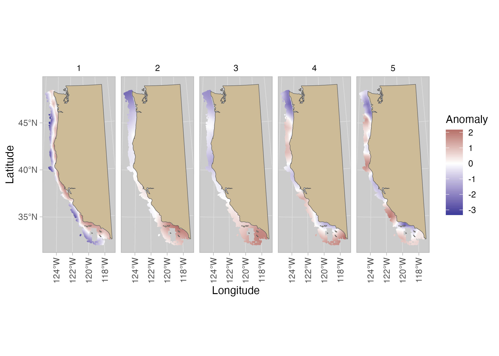
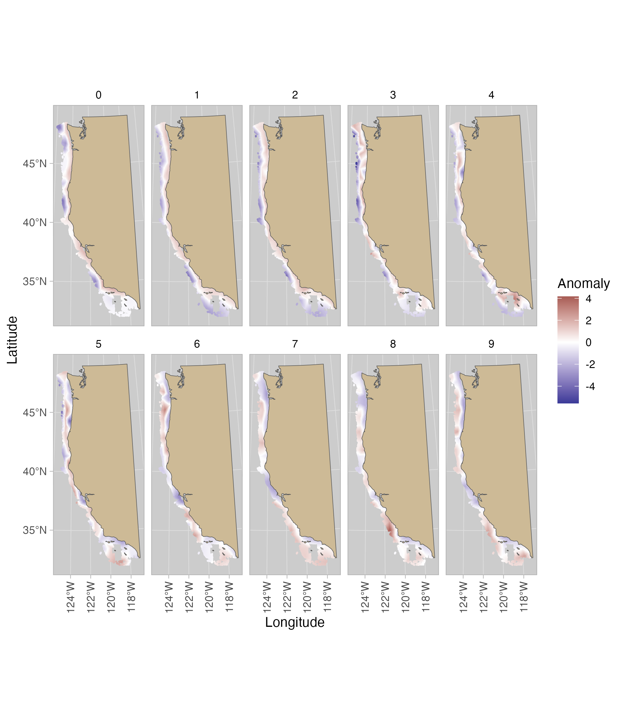
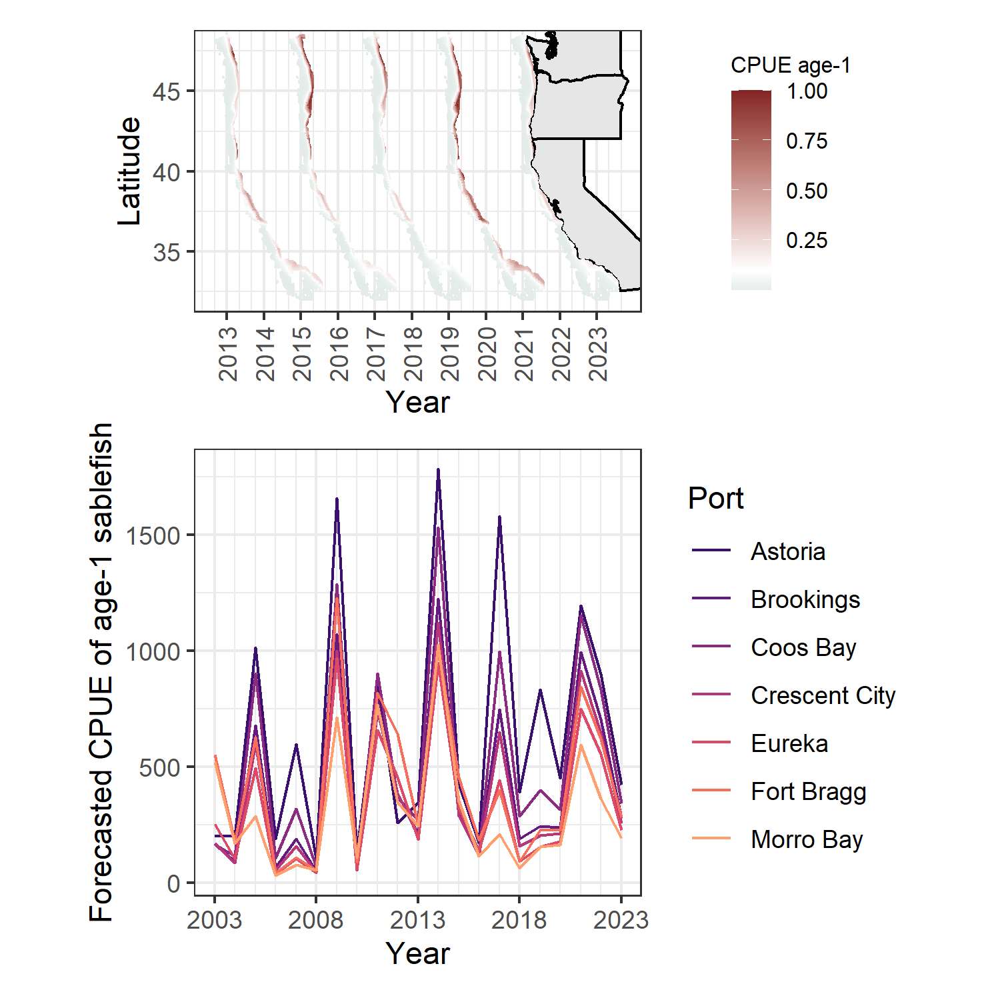

Incorporating spatial distribution at age improves predictive ability of SDMs
Abstract
Introduction
Why hake and sablefish? 2 species with strong gradients in distribution at age
Methods
Data
On the west coast of the USA, the West Coast Groundfish Bottom Trawl Survey (WCGBTS) has been an annual survey conduced from 2003 - present. The WCGBTS is designed to estimate the abundance, size, and age composition of groundfish species important to commercial and recreational fisheries found in near-bottom habitats on the west coast of the USA (Keller et al., 2017). The survey effort is concentrated in summer months and has been conducted annually since 2003 (here we use the data through 2018; data are publicly available at https://www.nwfsc.noaa.gov/data). Importantly, the random stratified sampling design, spatial and seasonal coverage, effort, and gears have remained relatively constant within the period we analyse. Like many other surveys around the world, no WCGBTS survey occured in 2020 because of the Covid-19 pandemic. Though the WCGBTS survey samples hundreds of species, we concentrated our analysis on two of the well sampled species from the WCGBTS, North Pacific hake and sablefish. [more on biological gradients] While otoliths are sampled continuously during the WCGBTS survey for a broad range of species, otoliths are generally aged when species are being prioritized for stock assessment by the Pacific Fishery Management Council (PFMC); full assessments between species may occur irregularly and be sporadically updated every 5 – 10 years. Hake and sablefish represent exceptions, as the hake stock is assessed annually by co-managers from the USA and Canada (Grandin et al. 2024) and sablefish is frequently assessed because of its high commercial value. For our analysis, we used hake collected 2007 – 2019 (mean 650.7 individuals sampled per year) and sablefish collected 2003 – 2023 (mean 1314.4 individuals sampled per year).
Spatial age models
For each species, we filtered by sex to focus on females and truncated ages to focus on those with the highest data availability; for hake this included ages 1 – 5, and for sablefish ages 0 – 9 (data from these ages represented 54% and 75% of the total aged fish, respectively). For each species - age combination, we constructed a unique spatiotemporal model fit to all years except the last available year for each species. Individual fish were aggregated at the haul level, summarizing the total number of fish sampled and number of fish sampled of the focal age; this allowed counts to be modeled as a binomial family (with logit link). Second, we constructed a spatiotemporal model as an extension of Generalized Linear Mixed Models (GLMMs) such that the prediction in location \(s\) and time \(t\) can be written as
\[ \begin{aligned} logit \left( p_{\boldsymbol{s},t} \right) &= \boldsymbol{\beta_{t}} + \omega_{\boldsymbol{s}} + \delta_{\boldsymbol{s},t} \end{aligned} \]
where \(\boldsymbol{\beta_{t}}\) represent time - varying intercepts modeled as a random walk \(\boldsymbol{\beta_{t}} \sim N \left( \boldsymbol{\beta_{t-1}}, \sigma_\beta \right)\), the spatial field \(\boldsymbol{\omega_{s}} \sim \operatorname{MVNormal} \left( \boldsymbol{0}, \boldsymbol{\Sigma}_\omega \right)\) and the spatiotemporal fields \(\delta_{\boldsymbol{s},t}\) are modeled as an AR(1) process \(\boldsymbol{\delta}_{t} = \rho \boldsymbol{\delta}_{t-1} + \sqrt{1 - \rho^2} \boldsymbol{\epsilon_{t}}\), where \(\boldsymbol{\epsilon_{t}} \sim \operatorname{MVNormal} \left(\boldsymbol{0}, \boldsymbol{\Sigma}_{\epsilon} \right)\)
Spatial and spatiotemporal random fields were constructed as Gaussian Markov random fields (GMRFs) using the stochastic partial differential equation approach (SPDE) (Lindgren, Rue, and Lindström 2011; Lindgren and Rue 2015). The SPDE method models the spatial correlation between points as a Matérn covariance function with smoothness parameter \(\nu = 1\). Spatial meshes for all ages and species were constructed with a cutoff distance of 50km (this distance controls the spacing of mesh vertices). Parameter estimation was done using the sdmTMB software package (Anderson et al. 2024) with R 4.3.1 (R Core Team 2024). The sdmTMB package relies on Template Model Builder (TMB)(Kristensen et al. 2016) to quickly and efficiently maximize the marginal log likelihood using auto-differentiation and the Laplace approximation to integrate out random effects. Models were evaluated for convergence (positive-definite Hessian matrix, and a maximum absolute log likelihood gradient < 0.001) and residuals diagnostics were evaluated with the DHARMa package (Hartig 2022).
Validating future predictive ability
As a first validation, we leveraged the natural recursive element of our data to quantify the ability of our models to predict the future distribution of ages. For each of the species - age models constructed above, we made predictions to the survey locations in the following year (e.g. age 3 hake in years 2007 – 2018 used to predict the distribution of age 4 hake in 2008 – 2019). We related the predicted probabilities of occurrence \(\hat{p}_{\boldsymbol{s},t}\) to observations by multiplying predictions by the total number of fish sampled for ageing, \(\hat{n}_{s,t} = N_{s,t} \cdot \hat{p}_{\boldsymbol{s},t}\). We quantified the relationship between predictions and observations by fitting a simple Poisson GLM, where counts of fish of age \(a+1\) in year \(t+1\) were treated as the response and \(log(\lambda_{s,t}) = \beta_{0} + \beta_{1} \cdot log \left( \hat{n}_{s,t} \right)\). The exponentiated slope parameter \(exp(\beta_{1})\) represents a the change in expected counts that would be expected from a 1-unit change in \(log(\hat{n}_{s,t})\), and can roughly be interpreted as an estimate of relative survival.
As a second validation, we compared aggregated predictions across all ages to a SDM model that used total biomass as a response.
Links to fisheries data?
Results
Figure (hake-spatial-anomaly?) shows a concentration of age-1 (mostly immature) hake near the coast, and then a clear N/S split for age-2s and 3s with higher probabilities of occurrence in the South (on avg). Age-4 hake appear to have a more patchy & northern distribution
Figure (sablefish-spatial-anomaly?) shows age 0-2 sablefish concentrated in shallow water, and more fish moving offshore by age 3. Several interesting patches in coastal OR have very low occurrence rates
Figure (glm-coefficients?) shows that in general, there’s more predictability (or maybe persistence for sablefish than hake). Using the distribution of age 1 and 2 fish to predict age 2 and 3 yields similar coefficients across species – but for older age 4-5 sablefish, these coefficients increase a lot
Figure (bycatch-risk?) aggregates occurrence probabilities for age 0 - 2 sablefish, potentially useful to identify hotspots
Similarly Figure (age5-sablefish?) shows occurrence probabilities for age 5 sablefish
Discussion
Limitations
- not predicting abundance (N) – just proportions
- We constructed single-age models, and this could be done in a multivariate (multinomial) framework – but our approach allows for greater flexibility in letting relationships change by age. Tradeoff is that it doesn’t impose sum to 1 constraint, binomials are independent



References
Anderson, Sean C., Eric J. Ward, Philina A. English, Lewis A. K. Barnett, and James T. Thorson. 2024. “sdmTMB: An r Package for Fast, Flexible, and User-Friendly Generalized Linear Mixed Effects Models with Spatial and Spatiotemporal Random Fields.” bioRxiv. https://doi.org/10.1101/2022.03.24.485545.
Hartig, Florian. 2022. DHARMa: Residual Diagnostics for Hierarchical (Multi-Level / Mixed) Regression Models. https://CRAN.R-project.org/package=DHARMa.
Kristensen, Kasper, Anders Nielsen, Casper W. Berg, Hans Skaug, and Bradley M. Bell. 2016. “TMB: Automatic Differentiation and Laplace Approximation.” Journal of Statistical Software 70 (5). https://doi.org/10.18637/jss.v070.i05.
Lindgren, Finn, and Håvard Rue. 2015. “Bayesian Spatial Modelling withR-INLA.” Journal of Statistical Software 63 (19). https://doi.org/10.18637/jss.v063.i19.
Lindgren, Finn, Håvard Rue, and Johan Lindström. 2011. “An Explicit Link Between Gaussian Fields and Gaussian Markov Random Fields: The Stochastic Partial Differential Equation Approach.” Journal of the Royal Statistical Society Series B: Statistical Methodology 73 (4): 423–98. https://doi.org/10.1111/j.1467-9868.2011.00777.x.
R Core Team. 2024. R: A Language and Environment for Statistical Computing. Vienna, Austria: R Foundation for Statistical Computing. https://www.R-project.org/.